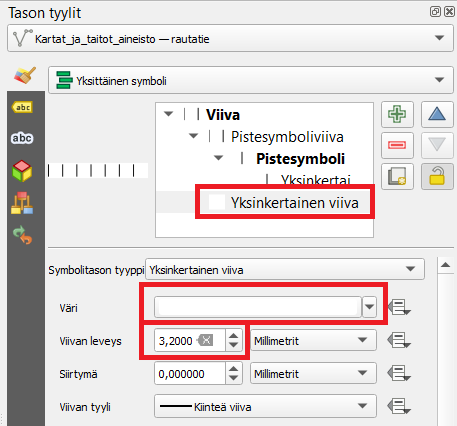

Harjoitus 1b: Viivakohteet ja sääntöpohjainen visualisointi
Harjoituksen sisältö
Harjoituksessa visualisoidaan viivakohteita vektoriaineistosta käyttäen hyväksi sääntöpohjaista visualisointia.
Harjoituksen tavoite
Koulutettava oppii viivakohteiden visualisointitavat sekä ymmärtää, miten luoda sääntöpohjaisia kuvaustekniikoita tasoille. Koulutettava oppii myös tieaineistoihin liittyviä edistyneempiä kuvaustekniikoita.
Valmistautuminen
Avaa edellisessä harjoituksessa luotu QGIS-projekti.
Sääntöpohjainen visualisointi
Viivakohteet voivat olla päällekkäisiä tasoja muiden tyyppisten tasojen päällä. Jotta viivakohteet erottuvat taustasta (esimerkiksi puistoalueiden läpi menevät polut), ne laitetaan usein aluekohteiden päälle. Aineistossa tiet ja rakennukset menevät usein päällekkäin eivätkä toimi kaikilla mittakaavatasoilla sujuvasti yhteen. Tehdään siis ensiksi rakennus-polygonitasolle siis sääntöpohjainen visualisointi.

Tasolla on oletuksena yksi sääntö (kaikki kohteet kuvataan kaikilla mittakaavoilla samalla tavalla), tuplaklikkaa sitä muokataksesi sitä.

Tarkoituksena on luoda sääntö, jonka perusteella QGIS näyttää rakennukset vain 1 : 10 000 -mittakaavassa ja sitä tarkemmissa mittakaavatasoissa.
Haluamme valita visualisointiin kaikki talot, joten valitse suodattimeksi “Else”. Suodatuksen lisävalintoihin pääsemme tieaineiston parissa. Nyt meille riittää, että laitamme täpän Scale range -kohtaan ja täytämme pienimmäksi mittakaavaksi 1:10 000 ja suurimmaksi 1:1. Tämä mittakaavaväli on se, jolla mm. monia opaskarttoja tarkastellaan.

Nyt kun muutat QGISin näkymässä kartan mittakaavaa (käyttämällä vaikkapa hiiren rullaa tai kannettavan tietokoneen hiiren lähennystä ja loitonnusta), huomaat että rakennukset tulevat näkyviin ja katoavat mittakaavatason mukaan.
Tieaineisto
Tieviiva-aineisto sisältää erityyppisiä teitä. Avaa aineiston attribuuttitaulukko ja tarkastele mitä se sisältää. Huomaat, että Kohdeluokka-sarakkeessa tiet on luokiteltu seitsemään eri luokkaan. Kartoissa on kuitenkin usein vain neljä eri luokkaa tietyypeille, joten käytetään samaa luokittelua.
Tässä harjoituksessa käytetyt kohdeluokat perustuvat Maanmittauslaitoksen luokitukseen Autotie Ia (12111), Autotie Ib (12112), Autotie IIa (12121), Autotie IIb (12122), Autotie IIIa (12131), Autotie IIIb (12132), Ajotie (12141). Tarkemmat tiedot aineistosta löytyvät: https://www.maanmittauslaitos.fi/sites/maanmittauslaitos.fi/files/attachments/2023/06/Maastotietokohteet_2023_05.pdf
Jotta saamme luotua mittakaavaperusteisen näkyvyyden aineistolle ja
tehtyä eri luokille omat visualisointinsa, valitaan tieviiva-aineistolle
sääntöpohjainen visualisointi. Tee uusi sääntö paneelin vasemmasta
alareunasta  -painikkeesta. Tästä tulee
luokka 1.
-painikkeesta. Tästä tulee
luokka 1.
Lisää suodatin, scale range (mittakaavaperusteinen näkyvyys) sekä kaksi visualisointitasoa kohteelle:
Otsikko: Luokka 1
Suodatin: "kohdeluokka" = 12111 OR "kohdeluokka" =12112
Scale range: 1:100000000, 1:1
Valitse aineistolle ensin yksi yksinkertainen täyttö, jossa on haluamasi
väri. Sen jälkeen paina -painiketta ja
lisää toiseksi väriksi musta. Ensimmäisestä väristä tehdään tien pääväri
ja mustasta tien reunaviivan väri.

Jotta saat mustan värin reunaviivaksi, aseta se visualisointijärjestyksessä
alimmaiseksi painamalla  -painiketta ja
asettamalla mustan viivan paksuus täyttövärin paksuutta isommaksi. Näin
QGIS luo siis ensin leveän mustan viivan, jonka päälle tulee toisella
värillä hieman kapeampi viiva - lopputulos saa tieaineiston näyttämään
tiealueelta, jolla on reunaviiva.
-painiketta ja
asettamalla mustan viivan paksuus täyttövärin paksuutta isommaksi. Näin
QGIS luo siis ensin leveän mustan viivan, jonka päälle tulee toisella
värillä hieman kapeampi viiva - lopputulos saa tieaineiston näyttämään
tiealueelta, jolla on reunaviiva.
Esimerkkikuvan asetukset luokalle 1 olivat:
Viiva 1 (sisus): täyttöväri: #f1a342 paksuus: 2,2 mm
Viiva 2 (reuna): täyttöväri: #000000 paksuus: 2,6 mm
Tee lopuille kolmelle luokalle samalla tavalla sääntöpohjainen luokittelu ja mittakaavaperusteinen näkyvyys näillä arvoilla:
Luokka 2 "kohdeluokka" =12121 OR "kohdeluokka" =12122
Scale range: 1:20001, 1:1
Viiva 1: täyttöväri: #f7e27c paksuus: 2,8 mm
Viiva 2: täyttöväri: #000000 paksuus: 3,1 mm
Luokka 3 "kohdeluokka" = 12131 OR "kohdeluokka" = 12132
Scale range: 1:10001, 1:1
Viiva 1: täyttöväri: #ffffff paksuus: 1,2
Viiva 2: täyttöväri: #7e7a7a paksuus 1,6
Luokka 4 "kohdeluokka" = 12141
Scale range: 1:10 001, 1:1
Viiva 1: täyttöväri: #ffffff paksuus: 1,2
Viiva 2: täyttöväri: #a4a9a2 paksuus: 1,8 Viivan tyyli: pisteviiva
Nyt tiet ovat muuten valmiita, mutta monissa kohdin reunaviivat näyttävät menevän väärin, esimerkiksi risteykset näyttävät sekaville. Muutetaan siis vielä teiden piirtojärjestys, jotta reunaviivat menevät piiloon. Paina “symbolitasot”:

Määrittele järjestys kuvan mukaisesti klikkaamalla värin kenttää ja kirjoittamalla siihen (musta jää 0:ksi, muut värit muutetaan arvoon 1):

Nyt QGIS piirtää mustan värin ensin ja sen päälle täyttövärin. Näin reunaviivat on saatu piiloon. Seuraavaksi vielä asetetaan teiden keskinäinen piirtojärjestys niin, että päätiet piirtyvät pikkuteiden päälle. Klikkaa alalaidasta “Tason piirto” -kohtaa ja laita täppä “Säädä kohteiden piirtojärjestystä” -kohtaan. Tämän jälkeen paina sen vieressä olevaa symbolia avataksesi lisäasetukset.


Aseta arvot kuten kuvassa (Lauseke: kohdeluokka, Nouseva/laskeva: Laskeva). Nyt QGIS järjestää kohteet kohdeluokka-sarakkeen arvojen mukaan niin, että isoimman arvon omistavat kohteet tulevat päällimmäisiksi. Paina OK.
Rautatie
QGISissä on myös valmiita visualisointeja, jotka näkyvät visualisointiasetusten alkunäkymässä. Katso symbolikirjaston suosikeista, miltä näyttäisi vaikkapa “topo railway”. Saat valmiin kuvaustyylin käyttöön klikkaamalla sitä hiiren vasemmalla painikkeella. Voit tutkia, miten tyyli on tehty, klikkaamalla sen visualisointitapoja. Mitä saat muutettua “Pistesymboliviiva”- tai “Yksinkertainen pistesymboli”-otsikoiden alta?

Voit käyttää valmista symbolia visualisointisi pohjana, jota alat editoimaan. Esimerkiksi “topo railwayn” alle voit lisätä alle valkoisen yhtenäisen viivan samaan tapaan kuin teissä lisättiin musta reunaviiva päävärin alle. Tämän voit tehdä valitsemalla Yksinkertainen viiva -visualisointitason ja muokkaamalla siinä olevan mustan, kapean viivan leveäksi ja valkoiseksi.
Muokattavat kohdat ja esimerkkiarvot:

Lopputulos:

Kun olet valmis, tallenna projektitiedosto kurssihakemistoon pikanäppäimellä CTRL + S tai päävalikosta Projekti > Tallenna.